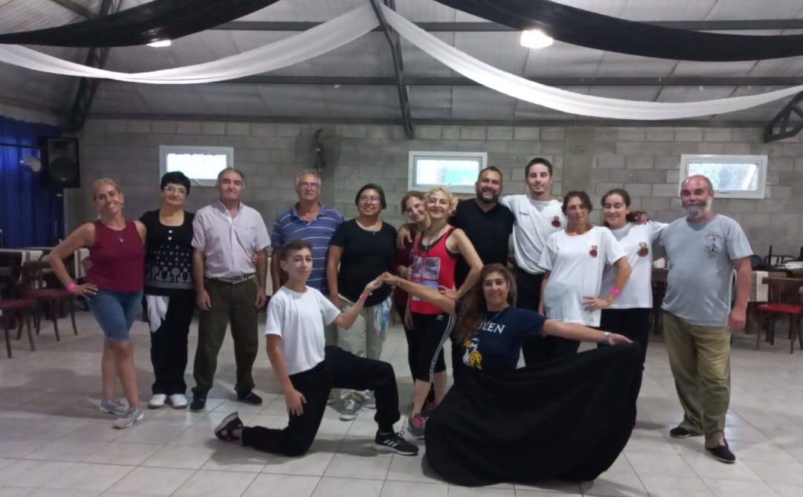

25/04/2023
TALLERES CULTURALES EN FODIEM CULTURA

FODIEM CULTURA. Fodiem cultura sumó nuevos talleres de desarrollo cultural a su Asociación Civil. Desde el mes de marzo comenzaron a desarrollarse las clases de danzas tradicionales, danza y expresión y teatro.
A la tradicional escuela de danzas tradicionales “Tranquera abierta”,
destinada a mayores de 15 años, se le suma a nuestra Asociación Civil
la escuela de Danzas y expresión FODIEM a cargo de la profesora
Sofía Carballido y la escuela de teatro “El paño escénico”, bajo la
coordinación de Sergio Piazza.
La escuela de danzas tradicionales “Tranquera abierta” viene
desarrollándose desde hace ya varios años en las instalaciones de
la Escuela Técnica N° 5 los días miércoles de 19:30 a 21:30 hs. y
está destinada a alumnos de 15 años en adelante.
Por otro lado, desde el mes de marzo, también en la Escuela Técnica
N° 5, se dictan las clases de la escuela de “Danzas y expresión
FODIEM, a cargo de la profesora Sofía Carballido, los días martes y
jueves 19:30 hs. Las clases están abiertas a la comunidad y están
orientadas a niños de 8 a 12 años.
También, en el mes de marzo comenzaron a desarrollarse las clases de
teatro en el espacio cultural Goldoni teatro, destinadas a niños,
adolescentes y adultos
15/03/2023
TRANQUERA ABIERTA A PURO BAILE
TRANQUERA ABIERTA. del 24 al 26 de febrero, el grupo de danzas tradicionales "Tranquera abierta" participó de varios talleres y seminarios realizados en la localidad de La Falda, Cordoba. Se realizaron talleres de Zamba y Jota, a cargo de la profesora Fany Gorosito, de cultura Guemes y seminarios de danzas de la region pampeana y del Norte argentino a Cargo de Fany Gorosito y Daniel Romero.
25/03/2023
GOLDONI TEATRO REABRIO SUS PUERTAS

GOLDONI TEATRO.El domingo 23 de abril, se presentó en el
escenario de Goldoni teatro el espectáculo “Tributo a Yupanqui”
protagonizado por Rubén Yulió y Hernán Lattanzio.
"Tributo a Yupanqui" es Un espectáculo que propone un encuentro
acústico e íntimo, con una puesta despejada de efectismos y llena
de profundidad. Junto a relatos y poemas los protagonistas fueron transitando por
las canciones más emblemáticas de Yupanqui que aún siguen dando
vueltas por el mundo.
La voz y la guitarra de Hernán Lattanzio, junto al guion y lectura de
textos de Rubén Yulió, fueron los encargados de testimoniar el
legado de este referente indiscutido
10/04/2023
100 PLAZAS DEL FOLCLORE

FODIEM CULTURA. El domingo 9 de abril se llevó a cabo en la plaza de La Emilia el evento
100 plazas del folklore "Teresita Blanco" que celebra el día de la zamba
y se realiza de manera simultánea en diferentes plazas de nuestro país.
Con la organización de la Asociación Civil FODIEM, dicho evento convocó
a diferentes artistas locales y se realizó además un Homenaje a Roberto
Aguirre, un gran representante de la cultura local.
Dicho evento se desarrolló bajo una gran concurrencia de público y
participaron diversos artistas locales y de la zona.